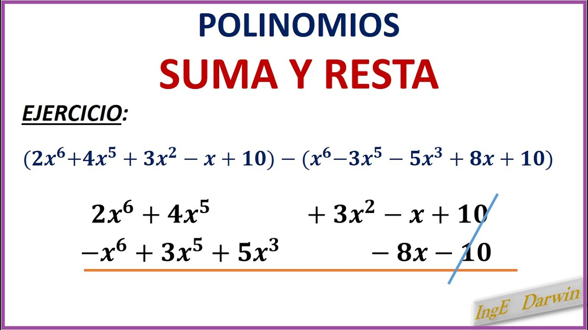

Que es un Monomio?
¿En matemáticas, un monomio es una expresión algebraica en la que se utilizan incógnitas de variables literales que constan de un solo término, y un número llamado: «coeficiente». Las únicas operaciones que aparecen entre las letras son el producto y la potencia de exponentes naturales.
Se denomina grado de un monomio a la suma de los exponentes de las letras. Ejemplo: En el ejemplo anterior: , observamos: Los coeficientes son 3 ; -2 ; y 8 respectivamente Tienen grado 2, grado 3 y grado 5, respectivamente (como ya sabemos, cuando el exponente es 1 no se escribe). En el monomio x3, el coeficiente es 1 y la parte literal es x3 . También se considerará como un monomio a aquel que sólo tiene parte numérica. De esta forma, 8 por ejemplo, sería un monomio. Cuando forma parte de otra expresión más compleja, como por ejemplo 2x + 8 , diremos que es el término independiente. Partes de un monomio
Un monomio tiene 3 partes principales:
Coeficiente
Literales
Exponentes
Se describen las partes de un monomio en el siguiente ejemplo: 2ab3
mas ejemplos de moninomios
Que es un Binomio?
En álgebra, un binomio consta únicamente de una suma o resta de dos monomios
Un binomio es un polinomio con dos términos. Por ejemplo, x − 2 x-2 x−2 y x-6 son binomios.
Hoy, la idea de ‘binomio’ ha sobrepasado el mundo del álgebra y las matemáticas. Se le llama binomio a la combinación de dos nombres en el marco de cualquier actividad humana. Todo aquello que esté compuesto por el nombre de alguien y el de otra persona es un binomio, y se aplica sobre todo en el mundo político, también en el deportivo y el artístico o del espectáculo. ¿Binomios algebraicos
(34*A + B/23)
(12 – 263/3)
Que es un Polinomio?
En matemáticas, polinomio es una expresión algebraica formada por la suma de varios monomios o términos, cada uno de los cuales es el producto de: un coeficiente constante y de valor conocido
Un polinomio completo tiene todos los términos desde el término independiente hasta el término de mayor grado. Un polinomio está ordenado si los monomios que lo forman están escritos de mayor a menor grado. Dos polinomios son iguales si verifican: 1Los dos polinomios tienen el mismo grado .
¿Cuáles son los tipos de polinomios ejemplos? Qué significa clases de polinomios en Matemáticas Polinomio de grado cero. P(x) = 2.
Polinomio de primer grado. P(x) = 3x + 2.
Polinomio de segundo grado. P(x) = 2x2+ 3x + 2.
Polinomio de tercer grado. P(x) = x3 - 2x2+ 3x + 2.
Polinomio de cuarto grado. P(x) = x4 + x3 - 2x2+ 3x +

Suma de polinomios
Para realizar la suma de dos o más polinomios, se deben sumar los coeficientes de los términos cuya parte literal sean iguales, es decir, las variables y exponentes (o grados) deben ser los mismos en los términos a sumar.
Para saber cómo sumar polinomios es fundamental que las variables y exponentes estén ordenados. El primer paso consiste en ordenar los polinomios de mayor a menor. Ahora se deberán agrupar los monomios con el mismo grado. Finalmente, se procede a sumar los monomios semejantes.
Multiplicación de polinomios
Multiplicación de un número por un polinomio
Es otro polinomio que tiene de grado el mismo del polinomio y como coeficientes el producto de los coeficientes del polinomio por el número.
3 · ( 2x3 - 3 x2 + 4x - 2) = 6x3 - 9x2 + 12x - 6 Multiplicación de un monomio por un polinomio
Se multiplica el monomio por todos y cada uno de los monomios que forman el polinomio.
3 x2 · (2x3 - 3x2 + 4x - 2) = 6x5 - 9x4 + 12x3 - 6x2